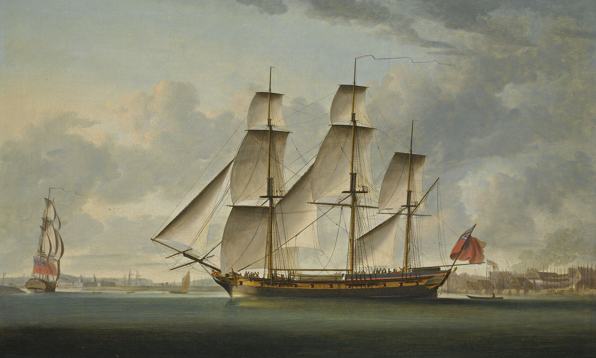

Самое приятное в мореплавании — близость берега,
а в сухопутном хождении — близость моря
© Плутарх
 В древности мореплавание было почти исключительно прибрежным;переезды с острова на остров предпринимались только если земля была видна. Древние египтяне знали лишь речное судоходство. Лишь у финикийцев начался расцвет мореплавания: они плавали в Тарсис около 1100 года до н. э., основали Кадикс, проникли в Атлантический океан до Оловянных островов (Британские острова) и, может быть, достигли даже берегов Балтийского моря. Они снаряжали экспедиции через Красное море в Офир, привозившие материалы для постройки храма Соломона. Геродот сообщает, что около 600 года до н. э. финикийские моряки по поручению фараона Нехо обошли в западном направлении всю Африку и вернулись на третий год через Геркулесовы столпы. Колония финикийского Тира, Карфаген, в течение нескольких столетий был могущественнейшей морской державой в Средиземном море.
У древних греков мореплавание развилось вследствие сношений с финикиянами. Афины лишь благодаря Фемистоклу сделались цветущим морским государством. Высшей ступени мореплавание достигло у греков на Родосе, портовые сооружения которого были лучшими в древности, а родосские морские законы имели силу и у римлян. После похода Александра Македонского появилось оживлённое морское общение греков с Индией; вскоре туда стали отправляться ежегодно более 200 судов.
В Древнем Риме даже после Пунических войн мореплавание было слабо развито. Перевозка хлеба из Сицилии и Северной Африки вызвала введение морских законов и страхования. Сами римляне были плохими моряками; их суда большей частью снабжались экипажем из провинций. Однако морская торговля в Средиземном море имела ключевое значение для экономики Римской империи.
Превосходными мореплавателями были австронезийцы. Путешествуя от острова к острову по Тихому океану, они расселились по Полинезии, а также по Индийскому океану достигли Мадагаскара, где в результате смешения с местным населением возник малагасийский народ. История судоходства в Индийском океане охватывает период в несколько тысячелетий. Знание о регулярности муссонов и течений давало возможность древним мореплавателям отрываться от берега и пересекать моря.
По данным этнографии и археологии, катамаран, подобный тому, что продолжает использоваться в Полинезии, был основным средством расселения её народов уже ко II тысячелетию до н. э.
В начале Средних веков отважнейшими мореходами были норманны; на своих судах, так называемых драккарах, без компаса и с меньшими, чем у средиземноморских культурных народов, астрономическими познаниями, они совершали переходы по океану, открыли Исландию, Гренландию и даже Северную Америку и, как морские разбойники (викинги), везде внушали ужас. Между тем как норманны в океане пользовались почти исключительно парусами и умели лавировать и против ветра, в Средиземном море было удержано передвижение посредством вёсел; однако галеры были здесь и снабжены такелажем.
Введение компаса и морских карт лишь постепенно способствовали прекращению привычного плавания вдоль берегов. Генуэзцы и венецианцы в это время начали выходить и за пределы Средиземного моря, посещая Брюгге, Гент, Антверпен. История флота и морской торговли Германии в конце Средних веков неразрывно связана с историей Ганзы. Купеческие суда Ганзы — когги, шнигги и шхуты — были вместе с тем военными судами.
Арабские купцы в Средние века заняли ключевые позиции на торговых путях в восточной части Индийского океана и полностью господствовали в его западной части. Лёгкие плоскодонные арабские средневековые корабли строились из стволов кокосовых пальм. Арабские мореплаватели, в основном, передвигались вдоль берегов, лишь самые опытные отваживались пересекать океан[4].
Наивысшим достижением китайского мореплавания были плавания флота под командованием Чжэн Хэ к берегам Индии и Африки в 1405—33 годах.
Малайские мореплаватели совершали плавания не только в водах Юго-Восточной Азии, но достигали также берегов Мадагаскара и Австралии[5]. Позднее, примерно в середине XVIII века, ловцы трепанга из района Макасар на Сулавеси стали посещать побережье Северной Австралии, что оказало значительное влияние на жизнь, культуру и экономику коренного населения северной части континента.
Уже в XIII веке в Западной Европе появились планы морских заатлантических экспедиций в Индию. В эпоху великих открытий прежде всего отличились португальцы с Генрихом Мореплавателем, Бартоломеу Диашем, Васко да Гамой и Фердинандом Магелланом во главе. Вскоре торговые экспедиции португальцев стали простираться до Японии и Китая. Из других мореплавателей того времени наиболее замечательны Колумб, Джованни Кабот, Америго Веспуччи и Мартин Бехайм. Далеко ещё не совершенными и хрупкими были каравеллы и другие суда этих смелых открывателей; у них была лишь одна палуба, высокая каюта, 2—4 мачты с большими латинскими парусами и немногими парусами на реях.
Существенное влияние на мореплавание имело изготовление редуцированных карт Герардом Меркатором и введение лага, впервые описанного в «Regiment for the sea» Bourne’a, в 1577 году. Услуги навигации оказало введение методов, хотя и несовершенных, определения долгот и широт.
С открытием Америки и морского пути в Индию, с успехами искусства кораблевождения и проистекшей отсюда большей безопасности мореплавания сильно оживилась морская торговля. В Португалии правительство монополизировало морские сношения с Китаем, Японией и Сиамом; Бразилия сделалась местом ссылки. Торговля с Индией подняла португальский торговый флот; Лиссабон после Амстердама сделался средоточием всего мореплавания.
Падение мореплавания Португалии началось, когда это государство было соединено с Испанией и в 1591 году нидерландцам был закрыт доступ в Лиссабонскую гавань. Мореплавание испанцев ограничивалось почти исключительно торговлей невольниками, необходимыми для золотых и серебряных рудников Америки; морскому упадку Испании не помешало и владение Филиппинскими островами.
Начиная с XV века нидерландцы достигли большого могущества на море, сначала успешно конкурировали с Ганзой, особенно в рыбной ловле, а затем обратились против испанцев. Основанная в 1602 году большая Ост-Индско-Голландская торговая компания и мореходное общество довели морское дело в Нидерландах до высшей ступени развития. На нидерландских верфях строились суда для почти всех наций. В середине XVII века у Нидерландов было около 15 000 торговых судов, в том числе 2000 для ловли сельди и около 200 китобойных и для ловли тюленей.
Поздно развилось мореплавание у англичан; лишь Генрих VIII дал ему прочные основания устройством морской администрации, мерами к образованию штурманов и лоцманов, регулированием берегового освещения и устройством портов и верфей. Ещё больше для поднятия морского могущества Англии сделала королева Елизавета. Экспедиции вокруг света Дрейка и Кавендиша и победа над испанской Армадой подняли национальное самосознание и обеспечили за Англией господство на море. Благодаря Навигационному акту Кромвеля Англия после победоносной войны с Нидерландами стала первой морской торговой державой. В 1661 году была основана Английская Ост-Индская компания, позже развившаяся в значительную колониальную силу.
Морское дело во Франции получило значение в XVII веке, при Кольбере. Он установил правильный набор матросов из среды берегового населения, завёл военные порты и верфи, платил судохозяевам премии за вновь построенные суда и издал морской устав 1681 года, послуживший образцом для других государств. Французская Ост-Индская компания была малоуспешна, но приобретение вест-индских «сахарных островов» способствовало развитию морской торговли.
В Германии после падения Ганзы мореплавание поддерживалось лишь Гамбургом, имевшим морские сношения с Испанией, Португалией, Исландией и Гренландией.
Купеческие суда конвоировались обыкновенно военными фрегатами, для защиты от пиратов и каперов. Каперство причиняло морской торговле в XVII и XVIII веках много вреда.
Несмотря на многочисленные морские войны, мореплавание постоянно усиливалось: Дания и Швеция присоединились к морским державам. Лучшими русскими мореплавателями были поморы, однако Россия, несмотря на усилия Петра I, долго не могла завести значительного флота.
В XVIII веке появился ряд важных для мореплавания изобретений — оптические приборы, секстаны, октанты и хронометр; одновременно появились и лунные таблицы, для определения долгот по лунным расстояниям[en].
Продолжительные европейские войны конца XVIII века и начала XIX века послужили в пользу молодому флоту США. В то время, как Великобритания и Франция спорили из-за славы изобретения парохода, американцы рейсом колёсного парохода «Саванна» через Атлантический океан доказали свое умение воспользоваться этим изобретением, сильнейшим образом способствовавшим развитию мореплавания. Изобретение гребного винта вскоре привело к всеобщему введению его на морских судах.
Лес как строительный материал оказался недостаточным; появились смешанные по материалу железно-деревянные суда и, наконец, суда из железа и стали. Отсюда явилась необходимость устранения последствий местного уклонения компаса, так называемой девиации.
Введение паровой силы увеличило число случаев столкновений судов; это привело к установлению правил относительно корабельного курса и позиционных фонарей. Сначала последние были введены лишь Великобританией, но в 1858 году были приняты всеми. В 1859 году международная конференция в Вашингтоне рассматривала разные проекты улучшений. Были введены международные сигнальные книги, семафорные станции и станции для туманных сигналов; расширено береговое освещение. Опасности мореплавания уменьшились благодаря предсказанию бурь и правилам для маневрирования во время ураганов; указания наиболее выгодных курсов дали возможность быстрее совершать рейсы. Парусное судостроение развивалось, чтобы конкурировать с дорогими вследствие употребления угля пароходами; так называемые чайные клиперы достигли максимальной парусной быстроты.
Окончание строительства Суэцкого канала в 1869 году увеличило пароходное сообщение между Европой и Восточной Азией и подняло до того времени незначительное мореплавание средиземноморских государств. Парусные суда стали служить лишь для перевозки сырья; распространенные повсюду пароходные линии приняли на себя всю перевозку пассажиров и дорогой клади, требующей быстрой доставки. Возникли крупные пароходные компании, такие как Cunard Line, Norddeutscher Lloyd (нем.)рус., а также компании для рыбной ловли в океане.
Появление радио в начале XX века способствовало повышению безопасности мореплавания. Сооружение Панамского канала в 1913 году сократило морские пути между Атлантическим и Тихим океанами.
К середине XX века парусные суда практически полностью были вытеснены судами с двигателем, при этом пароходы вытеснялись теплоходами.
В 1950-е годы появились суда с атомной энергетической установкой, однако в настоящее время из судов невоенного назначения применяются лишь атомные ледоколы, также действует атомный лихтеровоз «Севморпуть».
Начавшая работать в 1982 году спутниковая система аварийной связи Коспас-Сарсат увеличила безопасность мореплавания. Появление в 1990-е годы спутниковых навигационных систем облегчило работу штурманов.